Comprobación con datos aislados. Algunas imágenes se sustituyen para verificar proporciones difíciles; los créditos de Grupo Frontera proceden del catálogo público real. Haz clic para ampliar.
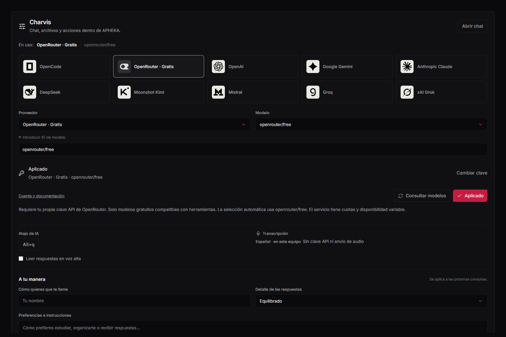
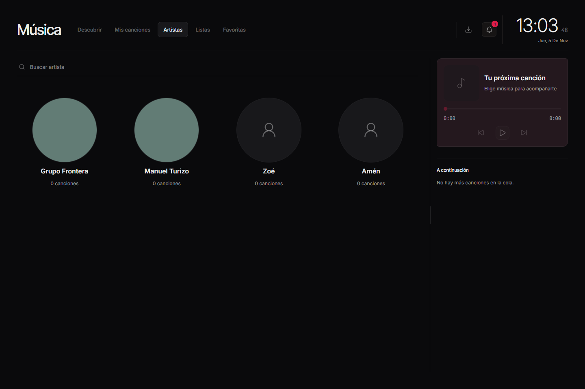
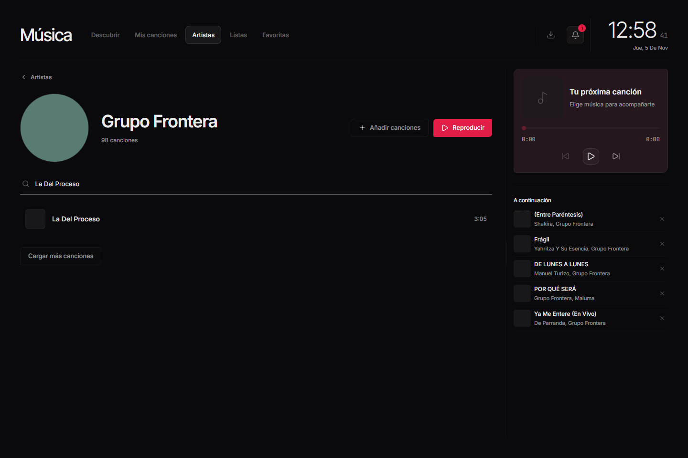
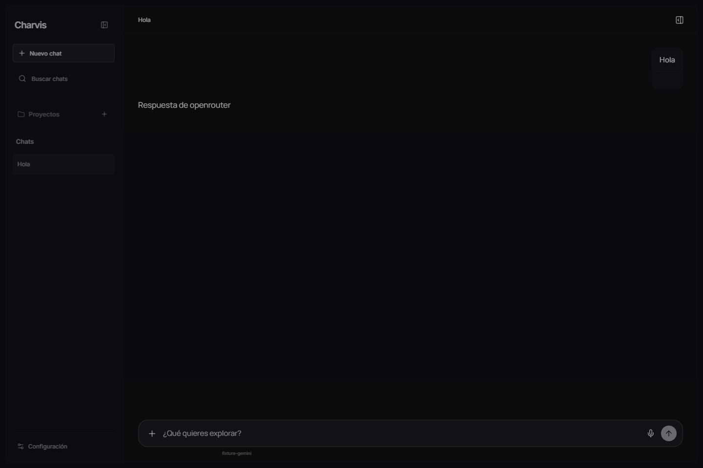
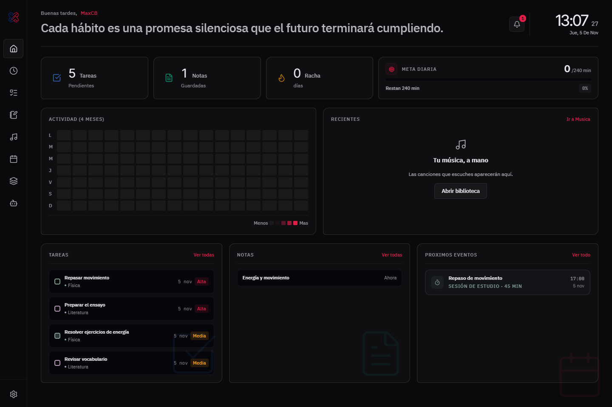
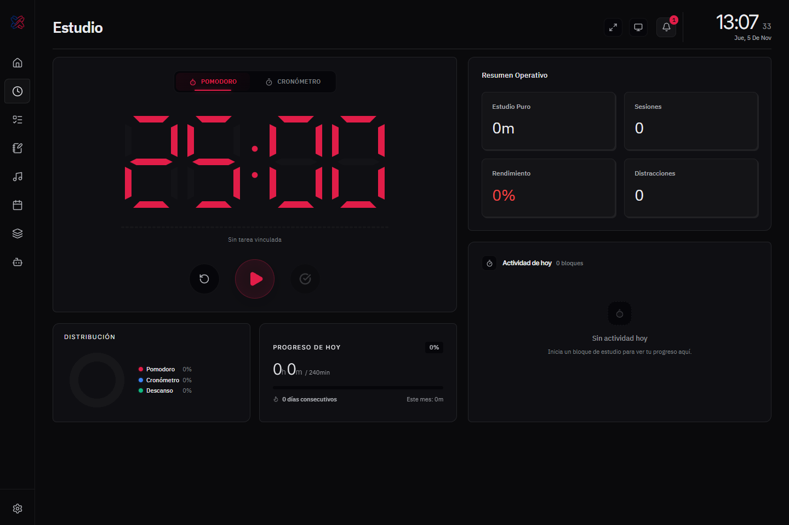
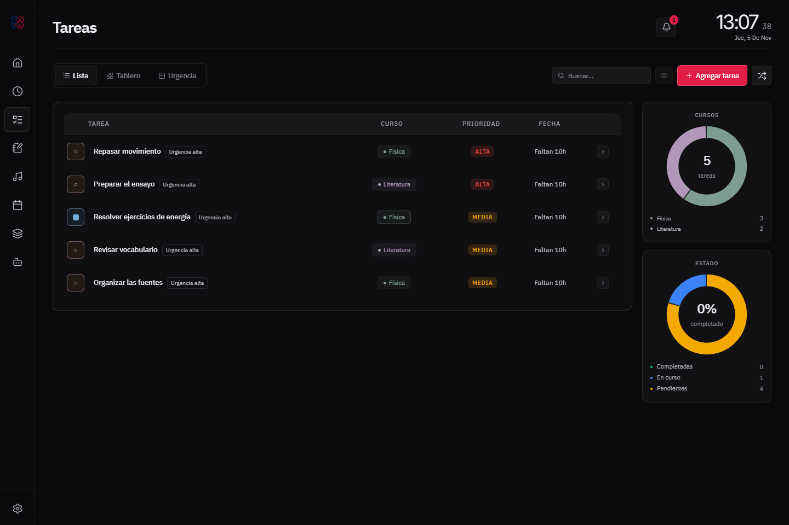
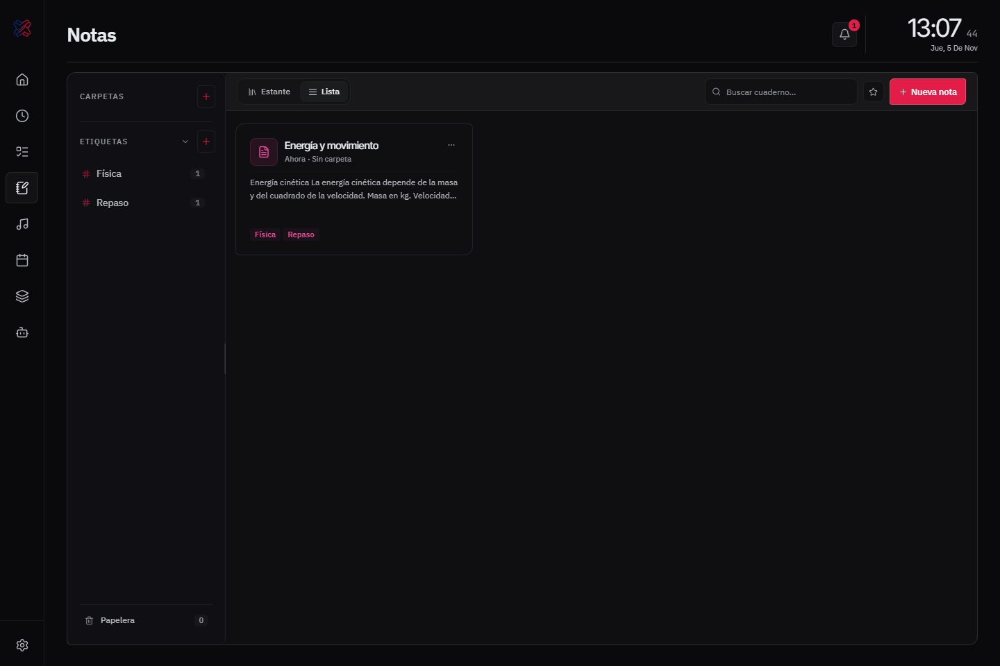
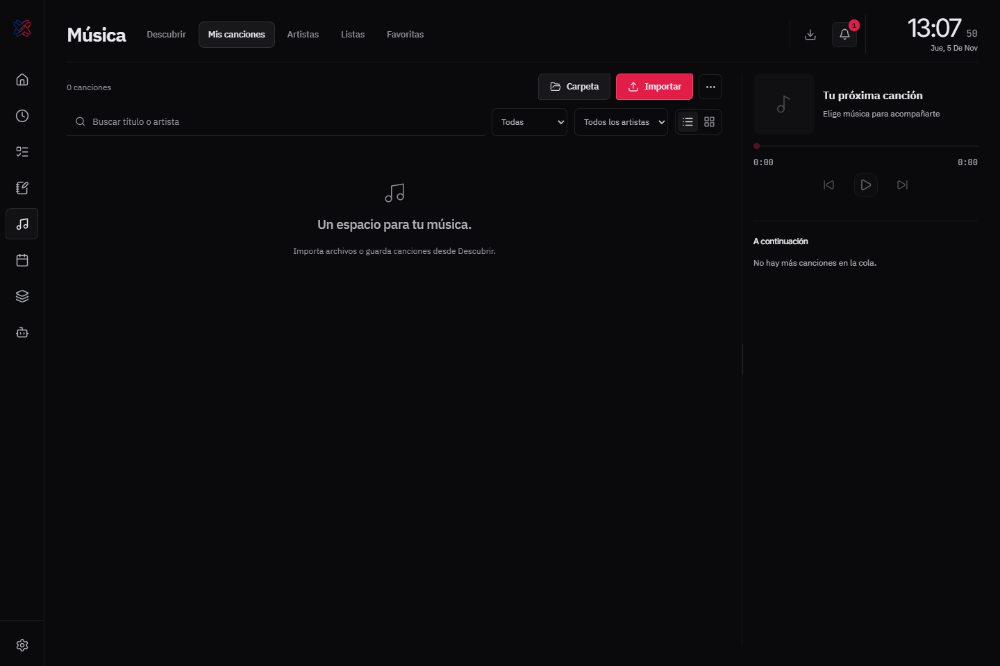
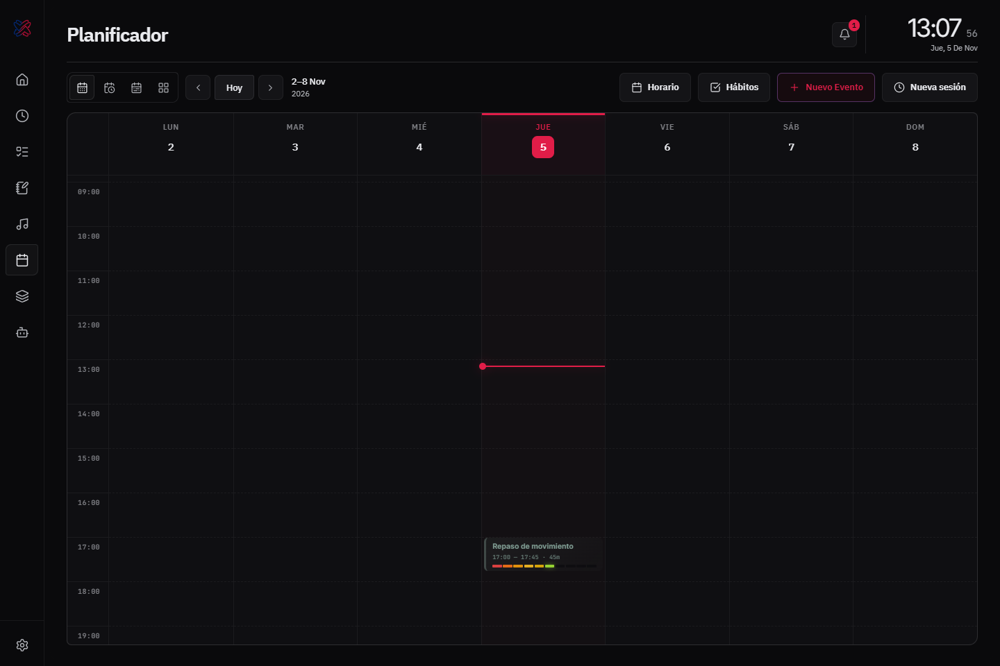
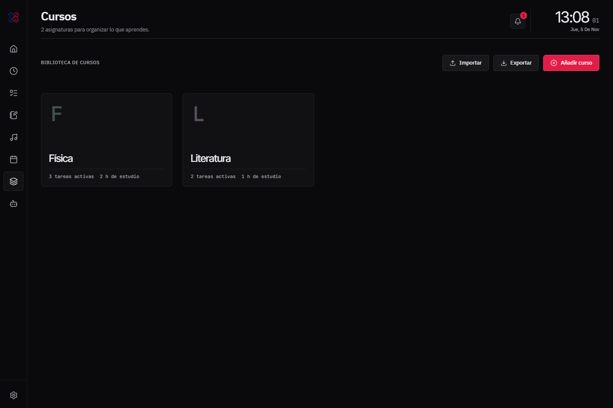
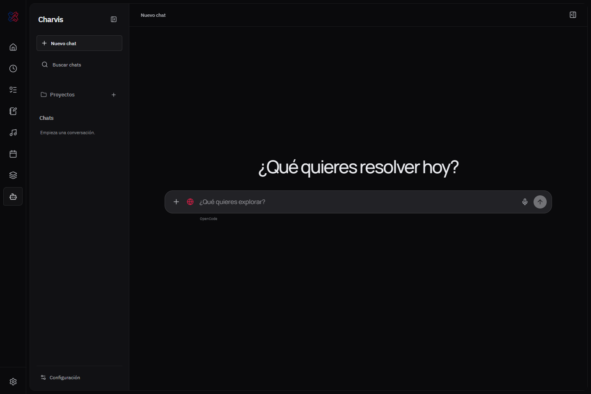
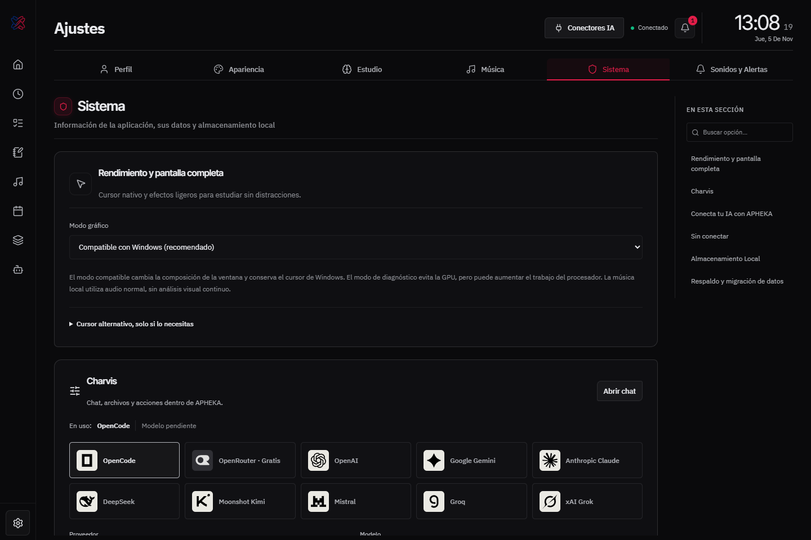